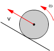
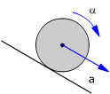
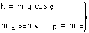
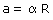
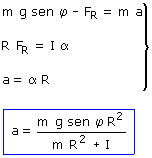
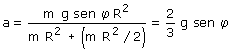

No nos dan la masa ni el radio del cilindro... ¡Que no cunda el pánico! Esto significa que la aceleración no dependerá de dichas magnitudes
 |
La velocidad lineal del cilindro va hacia arriba. La velocidad angular tiene sentido contrario al de las agujas del reloj (El punto de contacto con el suelo no tiene velocidad porque en él se compensan las velocidades de traslación y rotación) |
 |
La aceleración lineal tiene sentido contrario a la velocidad lineal (Frena). La aceleración angular tiene el sentido de las agujas del reloj (El punto de contacto con el suelo no tiene aceleración porque en él se compensan las aceleraciones) |
Para crear un par que produzca aceleración angular el sentido de las agujas del reloj la fuerza de rozamiento deberá apuntar hacia arriba (En el mismo sentido que la traslación)
 |
Traslación del c.d.m:  |
A efectos de traslación se puede considerar que todas las fuerzas exteriores están aplicadas en el c.d.m |
| Rotación alrededor del c.d.m: Relación entre traslación y rotación:  |
||
Combinando las expresiones anteriores resulta un sistema con tres incógnitas: a, α , FR

Sustituyendo el momento de inercia:
